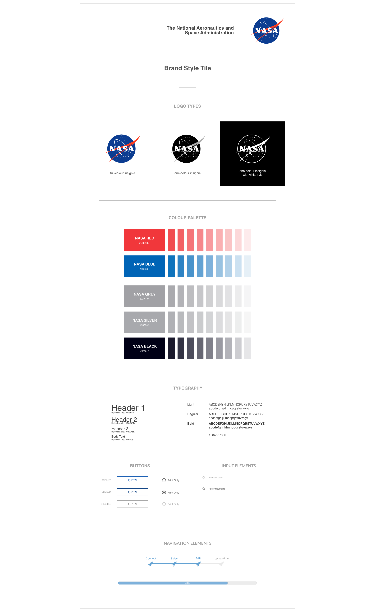

A personalized screen for every passenger onboard for a space-cation.
Target User
Successful and wealthy adventure-seekers between ages 35-45.
Goal
To create a one-of-a-lifetime “in flight” experience for space tourism.
My Role
User Experience Designer, Visual Designer
Summary
The main purpose of NASA Vacations is to create an space tourism experience that passengers will never forget. Because space tourism was not yet available, there were many assumptions taken, and understanding the passengers played a key role in creating the tablet program.
After several empathy interviews, I realized all the users mentioned similiar experiences. This includes uncomfortable seating, matching food preferences, constantly checking flight statistics, and more. Using the insight, I have designed a personizable space tourism experience screen that places emphasis on providing the needed information for the passengers in an easy-to-access manner.
I focused on NASA Vacation’s photofeed userflow. This allows the user to grab photos they have taken on the trip and post them on a “feed” that is visible for everyone onboard.
-- Process --
Research
Research for this project was definitely different than what I’ve done in my previous case studies. This involved an experience that does not exist currently. Instead of doing secondary and market research, I focused heavily on recruiting the right users to interview. This means interviewing people who have recently gone on a 10+ hour flight for a carefully-planned vacation.
Interview after interview, I found a similar pattern happening in all of the users’ experiences. They all touched on the importance of having comfortable seating, knowing aircraft external and internal details (ex: itinerary, time of arrival, etc.), bring able to adjust meal preferences, and more.
All in all, the main areas passengers value while they’re on the aircraft are comfort, transparency, and personalization.
"
I’m constantly looking at the duration of the flight remaining so I can get out of the uncomfortable seat.
"
I never know when washrooms are available.
"
Sleeping through a meal was probably one of worst things that can happen on a flight.
Strategy
I created a provisional persona that adopted all the common frustrations and needs that my user interviewees had on their long flight.
Brent Peterson is a business man who had planned on going into space for the past couple years. He’s technology savvy and loves going on adventures with his wife. He hopes his space experience will be one that he’ll never forget, especially if he documents every part with his favourite camera.

A customer journey map was created to fully understand what Brent goes through from when he steps onto the aircraft until he leaves the aircraft.
This map includes the thoughts he has, his positive/negative emotions, as well as the location he is in every time he makes an action.

Using the customer journey map, a userflow was mapped out for Brent.
Instead of creating the whole flight experience, I’ve decided to only focus on one aspect: the Photofeed. I’ve chosen to focus on this userflow because it allows me to go out of my comfort zone to create something creatively that does not currently exist.
The photofeed allows the passenger to share photos that they’ve taken on the aircraft for other passengers to see.
Interaction Design
Wireframes were then built in Sketch for the screens necessary to complete the userflow up to the “Uploaded Homepage”.
The wireframes were used to create a prototype with InVision for usability testing. The tests were conducted remotely with four users.
The users were given a task to complete: Upload and Print photos. The testers were encouraged to speak their thoughts whilst completing the task, as their actions and voices were recorded for future analysis and reference.
"
Can I edit all 3 pictures at once?
"
I think I need to go on my phone to connect.
"
These steps are easy to follow
User Interface Design
The style tile created was followed closely to NASA’s universal style guide.
All the elements’ colours and shapes were carefully chosen to unify the NASA brand.

The user interviews provided concrete comments, which allowed me to make informed improvements.The style tile was also used as a reference for NASA Vacations to create a cohesive experience for the user.
The completed userflow was combined together on Invision.
-- Reflection --
I’ve never thought creating something non-existant was that challenging until I tried to tackle it. I realize how important it is to understanding users and build an app just for them. Without knowing how they think and act, it’s nearly impossible to create a user-friendly app, especially for an experience that does not currently exist.
Looking back at the project, I’m more than excited to capture the rest of the screens that goes into this tablet app. There were numerous ideas that I’ve wanted to add whilst doing the photofeed userflow.
I loved how this project encouraged me to go out of my comfort zone to try something different. There were many times when I was stuck for new ideas, however, I found myself daring enough to continuously try out designs I’ve never tried out, because I wanted to push my creativity limits.
_______